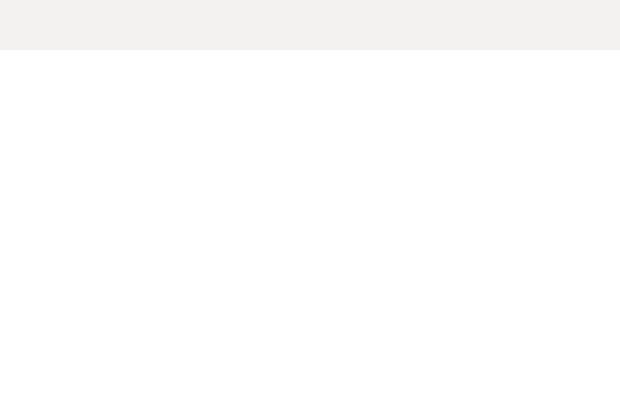

Set up your data ready for Consult
Data setup is the first step in using Consult to analyse your consultation. It's where you tell us how your data should appear in the dashboard when you analyse it later. Make sure you set aside time for this step — you'll need to review your data and confirm you're happy with it before we can generate themes.
Prepare your data for upload
Before you send us anything, you need to clean up the data you've exported from your survey tool. Download your responses and remove any personal information you don't want to send — things like email addresses or names.
If you have additional responses to include (from emails or other channels), add them to the bottom of the spreadsheet. Don't leave any blank rows or columns when you do this, as that will cause problems during upload.
Here we're removing email addresses and name columns from the exported data, then adding three email responses to the bottom of the sheet. Notice there are no blank rows between the original data and the new responses.
Understand the four data types
Consult classifies your consultation data into four types. Understanding these matters because each type appears differently in the dashboard and serves a different purpose in your analysis.
- Demographic questions have a defined list of responses and are used to filter across all questions in the dashboard. These appear in the left-hand filter panel.
- Multiple-choice questions also have a defined list of responses, but they aren't used as filters and aren't attached to any open questions. These appear at the top of a question view.
- Open questions have free-text responses and are where Consult identifies themes. These appear at the bottom of a question view.
- Hybrid questions combine a multiple-choice part and an open-text part. You want these connected in the dashboard so you can see both the selected option and the free-text explanation together.

Demographic questions power the filter panel on the left. Multiple-choice responses sit at the top of a question view, open-text responses at the bottom. Hybrid questions show both parts together.
Fill in the Question Understanding Template
The Consult team will share a Question Understanding Template with you. This spreadsheet is how you tell us which columns in your data map to which data types in the dashboard.
Your exported data will have columns across the top in Excel — the template is where you explain what each column contains. The template has four tabs, one for each data type.
The template has a tab for each data type. You'll work through each one, mapping columns from your exported data to how they should appear in Consult.
Map your demographic questions
On the Demographics tab, fill in which column in your spreadsheet contains each demographic question, and give it a short title. This title is what will appear in the dashboard filter panel.
For each demographic question, enter the column letter from your data and a short title for the dashboard. Delete the example row before sending.
Map your multiple-choice questions
The Multiple-choice tab works similarly, but here you also assign each question a number. Use the number that makes sense to you when you think about the order you'd analyse your questions — this is the number that will appear in Consult.
As well as the column and title, you assign each multiple-choice question a number. This controls the order it appears in Consult.
Map your open questions
Open questions work the same way, with one important difference: the title you enter here is sent directly to the AI to help it identify themes. So don't just write a shorthand label — include the full question that was asked in your consultation. The AI needs that context to do its work well.
The title for open questions is sent to the AI. A vague title like "Why?" won't give the AI enough context. Use the full question, like "Why do you agree or disagree with the proposed changes to licensing requirements?"
Map your hybrid questions
Hybrid questions have both a multiple-choice and an open-text component, and you want them linked in the dashboard. On this tab, you'll enter the column for the open-text part, the question number, the title as you want it to appear, and the column ID of the multiple-choice part. This lets Consult combine them so they appear together.
For hybrid questions, you map both the open-text column and the multiple-choice column so Consult can connect them in the dashboard.
Review your data in the dashboard
Once you've sent us your raw data and completed template, we'll load it into Consult and email you to review it. You'll get access to a live version of the dashboard with your data — but without themes at this stage. Take the time to check everything carefully before confirming, because changes after this point will require a fresh data upload.
Check the following:
- Demographic questions — Are all the demographic filters showing? Are responses appearing correctly, or has a response been split across two rows (for example, because of a typo creating a duplicate)?
- Multiple-choice questions — Is each question correct? Are all the response options present and accurate?
- All expected questions — Has every question you're expecting appeared in the dashboard?
- Response data — Go to the Response Analysis tab to confirm you can see the actual responses for each question.
If anything isn't right, correct it in your data, let us know what you've changed, and we'll re-upload it.

Check demographic filters for duplicates or splits, verify multiple-choice options, confirm all your questions appear, and preview responses in the Response Analysis tab. At this stage there won't be any themes yet.
Confirm your data is correct
Once you're satisfied that everything in the dashboard matches your consultation data, let the team know so they can proceed with generating themes.
Email consult@cabinetoffice.gov.uk to confirm your data is ready.